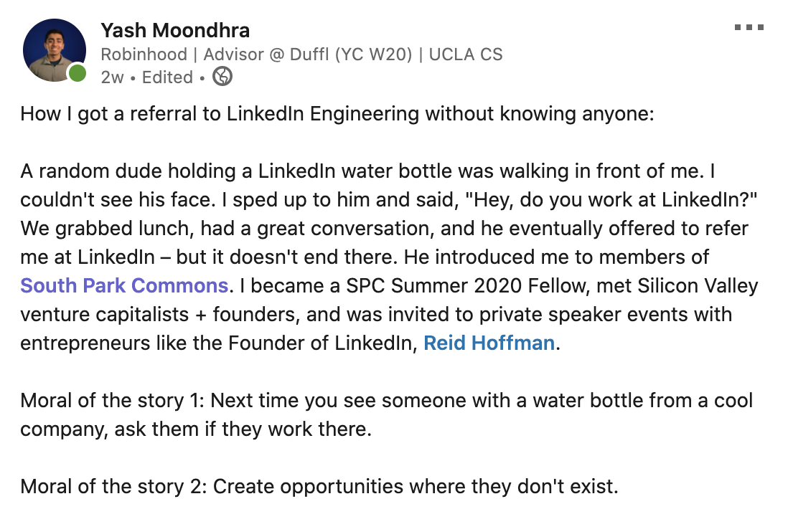
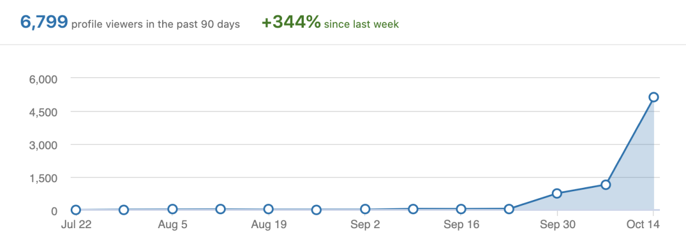
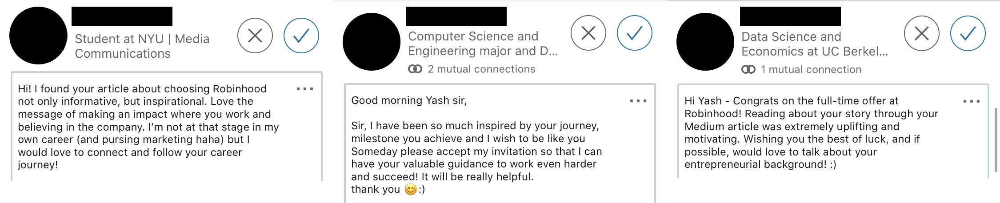

Content
Feel free to submit a link to content you've created that is representative of who you are and what you care about. This can be your Twitter handle, Medium account, Youtube Channel, etc.
ENCOURAGING OTHERS.
In the past few weeks before writing this, I have been making posts on LinkedIn to encourage people to become their best selves:
My last three LinkedIn posts have generated 180,000 views, and my profile received over 6,000 views:
Recently, a Medium article I wrote went viral. It has reached over 11,000 views on Medium and was added the "The Startup", Medium's largest publication (750K followers). To my surprise, several people reached out to me, inspired and motivated:
SPREADING PASSION AND ENERGY.
When I see drums near me, I can't resist asking if I can play them:
I used to skip classes in high school because I couldn't stop playing the marimba. The art teachers neighboring the marimba's practice room knew me too well, and my band teachers often used to tell me to "go home" as they were heading out. The following video generated 25,000 YouTube views and many positive comments, but I don't think those quantifiable metrics are as important as the fulfilling journey I had through learning this piece: